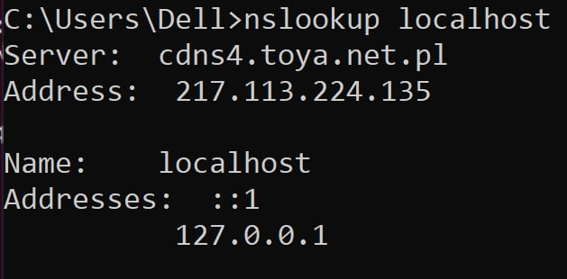

DNS and Mail Systems
1.1 DNS System
1.1.1 List of Top-Level Domains (TLDs)
TLDs are the last segment of a domain name after the last dot. They are categorized as follows:
-
Generic TLDs (gTLDs):
Common domains open to the public and not tied to geography.
Examples:
.com, .org, .net.
-
Country-Code TLDs (ccTLDs):
Represent specific countries or regions.
Examples:
.us (USA), .in (India), .uk (United Kingdom).
-
Sponsored TLDs (sTLDs):
Managed by specific organizations for targeted purposes.
Examples:
.edu (Education), .gov (Government), .aero (Aviation).
-
New gTLDs:
Introduced for branding or descriptive purposes.
Examples:
.shop, .app, .tech.
-
Infrastructure TLD:
.arpa is used for technical purposes like reverse DNS lookups.
1.1.2 Hierarchical Structure of DNS
The Domain Name System (DNS) is structured like an inverted tree, as described below:
-
Root Level:
The top of the hierarchy, represented by
., managed by global root servers.
-
Top-Level Domains (TLDs):
Includes
.com, .org, .edu. Managed by TLD-specific registrars.
-
Second-Level Domains:
Domains registered by users, such as
example.com.
-
Subdomains:
Subsections of a domain, like
blog.example.com or mail.example.com.
DNS Queries
-
Recursive Query:
The resolver takes responsibility for contacting multiple DNS servers until the full answer is found.
-
Iterative Query:
The resolver queries each DNS server step by step, receiving partial answers along the way.
DNS Delegation
-
Root Servers:
Delegate authority to TLD servers for domains like
.com.
-
TLD Servers:
Delegate authority to authoritative servers for specific domains, such as
example.com.
-
Authoritative Servers:
Hold the definitive records for a domain and provide the final answers for queries.
1.1.3 DNS Records and Reverse DNS
DNS uses various record types to handle specific types of information:
- A Record: Maps a domain to an IPv4 address.
- AAAA Record: Maps a domain to an IPv6 address.
- MX Record: Directs email to designated mail servers.
- CNAME Record: Points one domain to another domain.
- NS Record: Specifies the authoritative name servers for a domain.
- PTR Record: Used for reverse DNS, mapping IP addresses to domain names.
Reverse DNS: The process of translating an IP address back to its domain name using PTR records.
1.1.4 Authoritative vs. Non-Authoritative Answers
- Authoritative Answer: Provided by a DNS server that holds the original, definitive records for a domain.
- Non-Authoritative Answer: Retrieved from a caching DNS server, storing previous query results.
1.1.5 DNS Resolver, Cache, and /etc/hosts
- DNS Resolver: A system (often your ISP) that queries DNS servers to resolve domain names.
- DNS Cache: Temporarily stores query results to reduce repeated lookups.
-
/etc/hosts File: A local file for manual hostname-to-IP mappings. Overrides DNS for specified entries.
1.2 Mail System
1.2.1 Email Protocols (POP3, IMAP, SMTP)
Email protocols manage the transmission and access of emails between servers and clients:
-
SMTP (Simple Mail Transfer Protocol):
Used to send emails from a client to a mail server or between servers.
- Commands:
HELO: Identifies the sender to the server.MAIL FROM: Specifies the sender’s email address.RCPT TO: Specifies the recipient’s email address.DATA: Indicates the start of the email content.
-
POP3 (Post Office Protocol 3):
Downloads emails to the client and removes them from the server.
- Commands:
USER: Log in as a specific user.PASS: Provide the password.RETR: Retrieve a specific email.DELE: Delete an email.
-
IMAP (Internet Message Access Protocol):
Allows access and management of emails directly on the server.
- Commands:
SELECT: Select a mailbox.FETCH: Retrieve specific email content.STORE: Change email flags (e.g., mark as read).DELETE: Delete emails on the server.
1.2.2 NNTP Protocol
Network News Transfer Protocol (NNTP): Used for accessing Usenet newsgroups. It allows users to post, read, and manage discussion threads.
1.2.3 Email Mailbox, Parameters, Aliases, Address
- Mailbox: A storage space on the server for receiving and managing emails.
- Parameters: Include storage quota, retention period, and protocol support (POP3/IMAP).
- Aliases: Alternate email addresses that point to the same mailbox (e.g.,
support@example.com and help@example.com).
- Email Address: Follows the format
username@domain.com.
1.2.4 Email Structure
- Header: Contains metadata such as
From, To, Subject, and Date.
- Separator: A blank line (e.g.,
\r\n\r\n) marks the transition from the header to the body.
- Body: The main content of the email.
1.2.5 Attachments, Email Coding, MIME
- Attachments: Files like PDFs, images, or documents sent with an email.
-
Email Coding: Uses encoding techniques (e.g., Base64) to transmit binary files over text-based protocols.
-
MIME (Multipurpose Internet Mail Extensions): Formats emails with attachments and multimedia content.
- Example MIME Header:
Content-Type: text/plain; charset=UTF-8
- Attachments use
Content-Disposition: attachment; filename="file.pdf"
1.2.6 Mailing Lists and Email Gateways
-
Mailing Lists: Automatically distributes emails to multiple subscribers.
Example: Newsletters, community updates.
-
Email Gateways: Bridges different email systems or formats, such as converting IMAP emails to proprietary formats.
1.2.7 Email Security
- SSL/TLS: Encrypts email transmission between servers and clients, ensuring data security.
- PGP (Pretty Good Privacy): Provides email content encryption and sender authenticity verification.
- Digital Signatures: Ensure email integrity and verify sender identity.
1.2.8 Spam, Blacklists, Graylists, Spam Filtering
- Spam: Unsolicited bulk emails often containing advertisements or malicious content.
- Blacklists: Databases of blocked IPs or email addresses (e.g., maintained by services like Spamhaus).
- Graylists: Temporarily reject emails from unknown senders to check if they retry (a behavior of legitimate servers).
- Spam Filtering: Uses algorithms (e.g., Bayesian filtering) to detect and block spam emails.
2.1 DNS System
2.1.1
Display DNS settings on your computer using Control Panel and ipconfig. Find google DNS server and change DNS settings on your computer to use this server.
2.1.2. Using dig, host, nslookup find the following information:
2.1.2.1. Domain names and corresponding IP addresses of computers in lodz.pl domain
2.1.2.2. A computer somewhere in Europe, outside Lodz and find all the available information about DNS settings of this computer
2.1.2.3. A computer somewhere outside Europe (eg. Exotic country) and find all the available information about DNS settings of this computer
2.1.2.4. Verify DNS assignment for localhost

2.1.2.5. Flush dns memory on your computer using ipconfig
2.1.2.6. Change the file hosts in such a way that when you enter ifeXX.com the website msn.com will display (where XX is the number of your ife group).